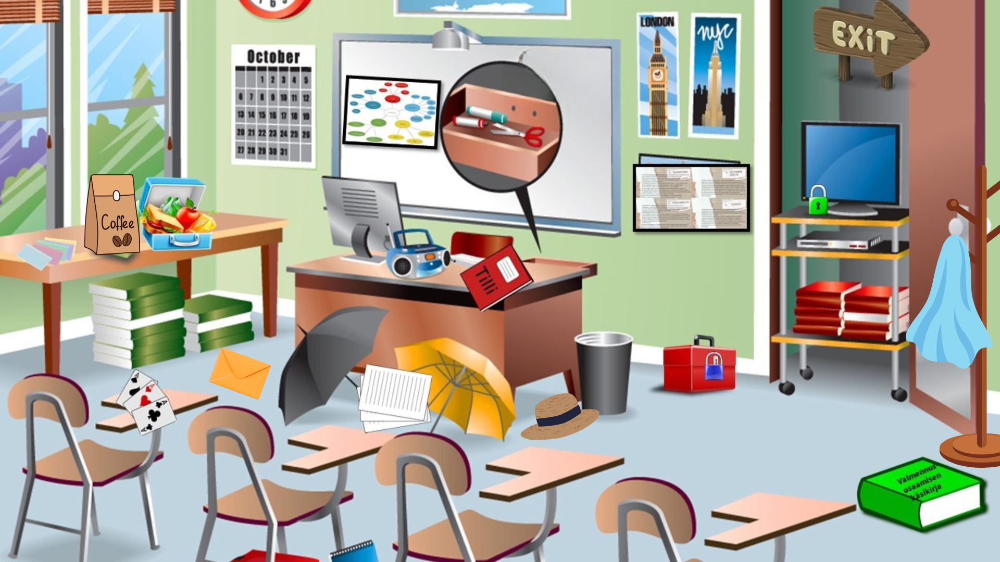

Tutki huonetta. Kaikki näkyvä ei ole ratkaisu.
Taustatarina
Tilli Yrttiaho on arvostettu valmentajakouluttaja, jolla on alkamassa valmentajakouluttajien koulutus Metsäniemen koulutuskeskuksella. Hän on tunnettu hajamielisyydestään ja siitä, että hän varjelee koulutusmenetelmiään ja tapojaan tarkasti. Nyt Tilli on kuitenkin joutunut kiipeliin, sillä hän on onnistunut navigoimaan itsensä aivan väärään paikkaan. Kaiken kukkuraksi hän on myös unohtanut Vierumäelle kaikki koulutusmateriaalinsa.
Nyt hän on pyytänyt teiltä apua tarvittavien materiaalien toimittamiseksi Metsäniemeen. Tilli on piilottanut tarvitsemansa esineet ja vihjeet huoneeseensa. Ulos pääsette, kun Tillin tarvitsemat kolme asiaa ja hänen mottonsa ovat selvillä.

Tutki huonetta. Kaikki näkyvä ei ole ratkaisu.